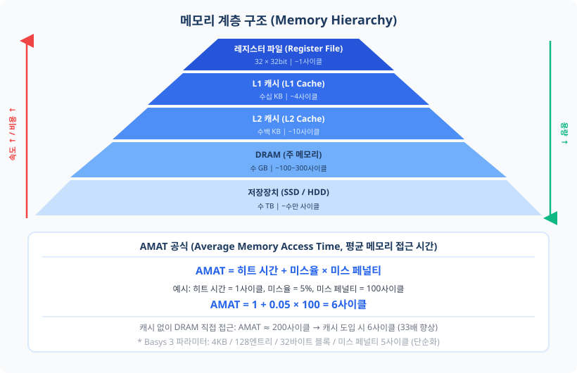
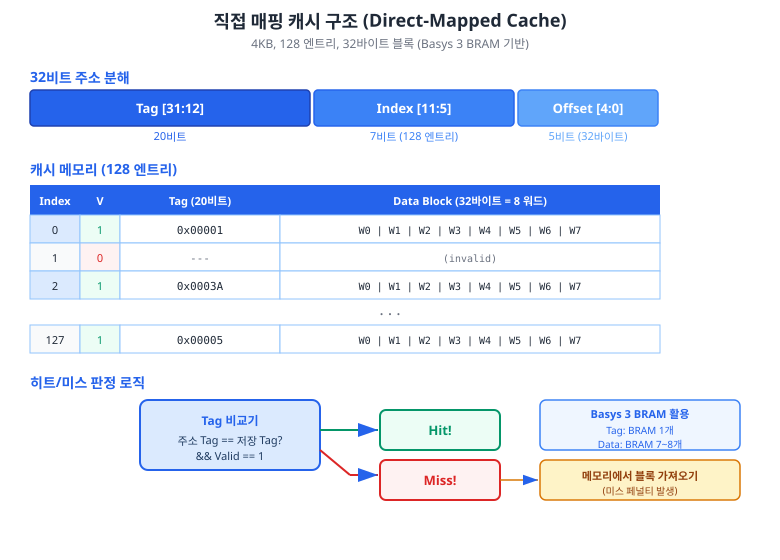
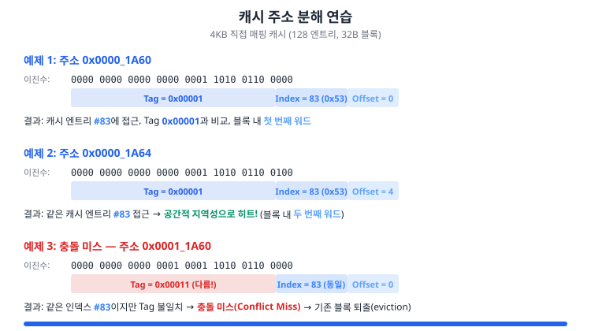
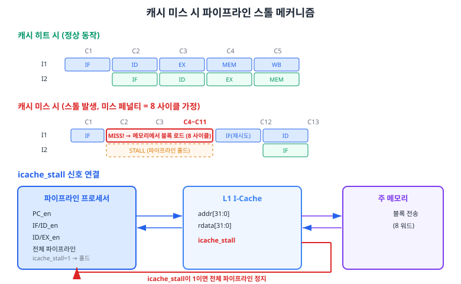
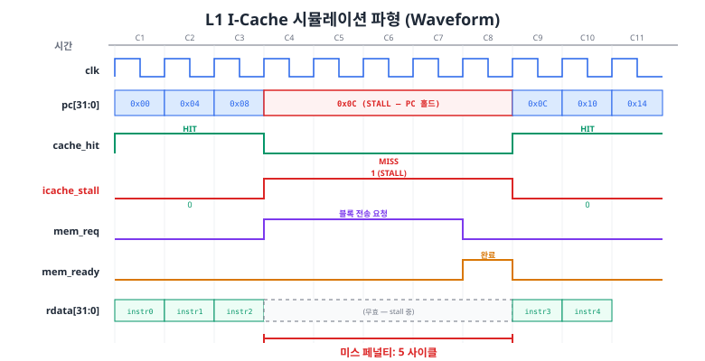

Chapter 12까지 완성한 파이프라인 프로세서는 명령어 메모리에 항상 1사이클 만에 접근할 수 있다고 가정하였습니다. 그러나 실제 주 메모리(Main Memory)는 프로세서 클럭 속도보다 훨씬 느립니다. 이 챕터에서는 그 간극을 메우기 위한 핵심 기술인 캐시(Cache)의 원리를 학습하고, Basys 3 BRAM을 활용한 L1 명령어 캐시를 직접 설계합니다.
Chapter 12에서 우리는 5단계 파이프라인 프로세서를 완성하고, 이상적인 조건에서 CPI(Cycles Per Instruction) ≈ 1을 달성하였습니다. 그런데 "이상적인 조건"이란 무엇이었을까요? 바로 명령어 메모리와 데이터 메모리가 항상 1사이클 만에 응답한다는 가정입니다. Chapter 5에서 설계한 IMEM과 DMEM은 온칩(On-Chip) BRAM으로 구현되었기에 이 가정이 성립하였습니다. 그러나 실제 시스템에서 주 메모리로 사용되는 DRAM은 프로세서 클럭 대비 수십~수백 사이클의 접근 지연(Access Latency)을 가집니다.
이 문제를 직관적으로 이해해 봅시다. Basys 3 프로세서가 50MHz로 동작한다면 한 사이클은 20ns입니다. 그런데 일반적인 DDR3 DRAM의 접근 지연은 약 50~70ns, 즉 3~4사이클 정도입니다. 고성능 프로세서가 1GHz 이상으로 동작할 경우, DRAM 접근은 100사이클 이상이 됩니다. 매 명령어 인출마다 100사이클을 기다린다면, CPI는 1이 아니라 100 이상으로 폭증하며, 파이프라인의 성능 이점은 완전히 사라집니다.
메모리 계층 구조(Memory Hierarchy)는 속도, 용량, 비용이 서로 다른 여러 단계의 메모리를 계층적으로 배치하여, 빠른 메모리의 속도와 큰 메모리의 용량을 동시에 근사하는 설계 기법입니다. 프로세서에 가까운 메모리일수록 빠르고 작으며, 멀어질수록 느리고 큽니다.

| 계층 | 종류 | 전형적 용량 | 접근 시간 | Basys 3 대응 |
|---|---|---|---|---|
| 레지스터 | 플립플롭 / LUTRAM | 128B (32×32비트) | ~0.2ns (1사이클) | 분산 RAM (LUT) |
| L1 캐시 | SRAM (온칩) | 4~64KB | ~1ns (1~2사이클) | Block RAM (36Kb) |
| L2 캐시 | SRAM (온칩) | 256KB~2MB | ~5~10ns | (Basys 3에서 미구현) |
| 주 메모리 | DRAM | 수 GB | ~50~100ns | 외부 메모리 미탑재 |
| 보조 저장장치 | SSD / HDD | 수 TB | ~ms 단위 | — |
캐시가 효과적인 이유는 프로그램의 메모리 접근 패턴이 지역성(Locality)이라는 통계적 특성을 보이기 때문입니다. 지역성에는 두 가지 종류가 있습니다.
시간적 지역성(Temporal Locality): 최근에 접근한 주소는 가까운 미래에 다시 접근될 가능성이 높습니다. 예를 들어, 반복문(loop)의 명령어는 매 이터레이션마다 반복적으로 인출됩니다. Chapter 10에서 검증한 1부터 10까지의 합산 프로그램을 떠올려 보십시오. loop: 레이블 이하의 몇 줄 명령어가 10번 반복 실행되었습니다. 이 명령어들은 한 번 캐시에 적재되면, 이후 9번의 접근에서 모두 히트(Hit)를 기대할 수 있습니다.
공간적 지역성(Spatial Locality): 최근에 접근한 주소의 인접 주소가 곧 접근될 가능성이 높습니다. 프로그램의 명령어는 메모리에 순차적으로 배치되므로, PC가 0x100을 인출한 직후에는 0x104, 0x108을 인출할 가능성이 매우 높습니다. 캐시는 이를 활용하여 하나의 주소에 미스가 발생하면, 해당 주소뿐만 아니라 인접 주소를 포함한 블록(Block) 단위로 메모리에서 가져옵니다. 이렇게 하면 인접 주소에 대한 후속 접근이 히트가 됩니다.
프로세서가 메모리 주소에 접근할 때, 해당 데이터가 캐시에 이미 존재하면 캐시 히트(Cache Hit)라 하고, 즉시 데이터를 반환합니다. 존재하지 않으면 캐시 미스(Cache Miss)라 하고, 하위 메모리에서 해당 블록을 캐시로 가져와야 합니다. 이때 소요되는 추가 시간을 미스 페널티(Miss Penalty)라 합니다.
캐시의 성능은 히트율(Hit Rate)과 미스 페널티로 결정됩니다. 평균 메모리 접근 시간(Average Memory Access Time, AMAT)은 다음과 같이 계산합니다.
AMAT = 히트 시간 + 미스율 × 미스 페널티
예를 들어, 히트 시간이 1사이클, 미스율이 5%, 미스 페널티가 20사이클이라면, AMAT = 1 + 0.05 × 20 = 2사이클입니다. 캐시가 없었다면 매 접근마다 20사이클이 필요했을 것이므로, 캐시는 메모리 접근 성능을 10배 개선한 셈입니다.
캐시 미스는 발생 원인에 따라 세 가지로 분류됩니다. 이를 3C 모델(Compulsory, Capacity, Conflict)이라 합니다.
| 미스 종류 | 원인 | 해결 방법 |
|---|---|---|
| 필수 미스(Compulsory Miss) | 해당 블록에 처음 접근 (Cold Start) | 프리페치(Prefetch) 기법 |
| 용량 미스(Capacity Miss) | 캐시 전체 용량 초과 | 캐시 크기 증가 |
| 충돌 미스(Conflict Miss) | 같은 인덱스에 서로 다른 블록 매핑 | 연관도(Associativity) 증가 |
이제 캐시의 구체적인 하드웨어 구조를 설계할 차례입니다. 캐시 설계에는 여러 가지 선택지가 있지만, 이 챕터에서는 가장 기본적이면서도 하드웨어가 단순한 직접 매핑 캐시(Direct-Mapped Cache)를 구현합니다. 직접 매핑 캐시는 각 메모리 블록이 캐시 내 정확히 하나의 위치에만 저장될 수 있는 구조입니다. 연관 캐시(Associative Cache)에 비해 충돌 미스가 더 많이 발생할 수 있지만, 비교기(Comparator)가 하나뿐이므로 하드웨어가 단순하고 Basys 3의 제한된 자원에 적합합니다.
우리가 설계할 L1 명령어 캐시(L1 I-Cache)의 파라미터를 먼저 결정합니다.
| 파라미터 | 값 | 결정 근거 |
|---|---|---|
| 캐시 전체 용량 | 4KB | Basys 3 BRAM 자원 예산 (8~9개 BRAM 사용) |
| 캐시 라인 수(엔트리) | 128 | 4KB ÷ 32B = 128 |
| 블록 크기 | 32바이트 (8워드) | 공간적 지역성 활용, 버스트 전송 효율 |
| 매핑 방식 | 직접 매핑 (Direct-Mapped) | 비교기 1개, 하드웨어 최소 |
| 주소 폭 | 32비트 | RV32I |
직접 매핑 캐시에서 32비트 주소는 세 개의 필드로 분해됩니다. 이 분해는 캐시 설계의 가장 핵심적인 개념이므로 정확히 이해해야 합니다.
오프셋(Offset): 하위 비트로, 블록 내에서 원하는 바이트의 위치를 지정합니다. 블록이 32바이트이므로 오프셋은 log2(32) = 5비트입니다. 이 중 하위 2비트([1:0])는 워드 내 바이트 위치이고, 비트 [4:2]는 블록 내 8개 워드 중 어느 워드인지를 선택합니다.
인덱스(Index): 128개의 캐시 엔트리 중 어느 엔트리에 접근할지 결정합니다. log2(128) = 7비트입니다. 이 값이 캐시 BRAM의 읽기/쓰기 주소가 됩니다.
태그(Tag): 나머지 상위 비트로, 같은 인덱스에 매핑될 수 있는 여러 메모리 블록을 구분합니다. 32 - 7 - 5 = 20비트입니다. 캐시에 저장된 태그와 주소의 태그가 일치하면 히트, 불일치하면 미스입니다.

각 캐시 엔트리는 다음 세 가지 필드로 구성됩니다.
유효 비트(Valid Bit, V): 이 엔트리에 유효한 데이터가 저장되어 있는지 나타냅니다. 리셋 직후 모든 유효 비트는 0이며, 블록이 캐시에 적재되면 1로 설정됩니다. 유효 비트가 0인 엔트리는 태그가 일치하더라도 미스로 처리됩니다.
태그(Tag): 해당 엔트리에 저장된 블록의 태그 값(20비트)입니다.
데이터 블록(Data Block): 실제 데이터로, 8개 워드(32바이트 = 256비트)입니다.
따라서 한 캐시 엔트리의 총 비트 수는 1(V) + 20(Tag) + 256(Data) = 277비트입니다. 128개 엔트리이므로 전체 저장 용량은 128 × 277 = 35,456비트 ≈ 4.3KB입니다. Basys 3의 36Kb BRAM 한 블록이 36,864비트이므로, 태그와 유효 비트는 BRAM 1개에, 데이터는 BRAM 7~8개에 분산 저장할 수 있습니다.
캐시 접근 시 히트/미스 판정은 다음 두 조건을 동시에 만족하는지 확인합니다.
valid_array[index] == 1 (유효 비트 참)tag_array[index] == addr_tag (태그 일치)두 조건이 모두 참이면 캐시 히트(Cache Hit)이고, 하나라도 거짓이면 캐시 미스(Cache Miss)입니다. 하드웨어적으로는 20비트 비교기(Comparator) 한 개와 AND 게이트 한 개로 구현됩니다.
// 히트/미스 판정 (조합 논리)
logic cache_hit;
logic tag_match;
assign tag_match = (tag_array[addr_index] == addr_tag);
assign cache_hit = valid_array[addr_index] && tag_match;
Basys 3의 Artix-7 XC7A35T에는 36Kb Block RAM이 50개 탑재되어 있습니다. 우리의 4KB 직접 매핑 캐시가 BRAM을 어떻게 사용하는지 분석해 봅시다.
| 구성 요소 | 비트 폭 × 깊이 | 사용 BRAM 수 (예상) |
|---|---|---|
| Tag 배열 + Valid 비트 | 21비트 × 128 | 1개 (36Kb BRAM, 폭 36비트 모드) |
| Data 배열 | 256비트 × 128 | 7~8개 (각 36비트 폭 × 128 깊이) |
| 합계 | 8~9개 (전체 50개의 16~18%) |
다음은 L1 명령어 캐시의 핵심 모듈 선언과 주소 분해 로직입니다. 전체 코드는 code_examples/ch13_l1_icache.sv에 있습니다.
module l1_icache #(
parameter ADDR_WIDTH = 32,
parameter DATA_WIDTH = 32,
parameter CACHE_LINES = 128, // 캐시 엔트리 수
parameter BLOCK_WORDS = 8, // 블록 내 워드 수 (32바이트)
// 자동 계산 파라미터
parameter INDEX_WIDTH = $clog2(CACHE_LINES), // 7비트
parameter OFFSET_WIDTH = $clog2(BLOCK_WORDS * 4), // 5비트
parameter TAG_WIDTH = ADDR_WIDTH - INDEX_WIDTH - OFFSET_WIDTH // 20비트
)(
input logic clk,
input logic rst_n,
// 프로세서 인터페이스 (IF 스테이지)
input logic [ADDR_WIDTH-1:0] proc_addr, // PC 주소
input logic proc_req, // 읽기 요청
output logic [DATA_WIDTH-1:0] proc_rdata, // 명령어 출력
output logic icache_stall, // 스톨 신호
// 메모리 인터페이스
output logic [ADDR_WIDTH-1:0] mem_addr,
output logic mem_req,
input logic [DATA_WIDTH-1:0] mem_rdata,
input logic mem_ready
);
// 주소 분해
logic [TAG_WIDTH-1:0] addr_tag;
logic [INDEX_WIDTH-1:0] addr_index;
logic [WORD_SEL-1:0] addr_word_sel;
assign addr_tag = proc_addr[31:12]; // 상위 20비트
assign addr_index = proc_addr[11:5]; // 중간 7비트
assign addr_word_sel = proc_addr[4:2]; // 워드 선택 3비트
// 캐시 저장소
logic valid_array [0:CACHE_LINES-1];
logic [TAG_WIDTH-1:0] tag_array [0:CACHE_LINES-1];
logic [DATA_WIDTH-1:0] data_array [0:CACHE_LINES-1][0:BLOCK_WORDS-1];
캐시의 Tag/Index/Offset 분해는 처음에는 추상적으로 느껴질 수 있지만, 몇 가지 예제를 직접 풀어 보면 패턴이 명확해집니다. 이 절에서는 앞서 설계한 4KB 직접 매핑 캐시(128 엔트리, 32바이트 블록)를 기준으로 주소 분해 연습을 수행합니다.
32비트 주소의 필드 배치를 다시 한번 정리합니다.
| 필드 | 비트 범위 | 비트 수 | 역할 |
|---|---|---|---|
| Tag | [31:12] | 20 | 블록 식별 |
| Index | [11:5] | 7 | 캐시 엔트리 선택 (0~127) |
| Offset | [4:0] | 5 | 블록 내 바이트 위치 (0~31) |

예제 1: 주소 0x0000_1A60
먼저 16진수를 이진수로 변환합니다.
// 0x0000_1A60 = 0000 0000 0000 0000 0001 1010 0110 0000
// |-------- Tag --------||Index-||Offs|
// Tag = 0000_0000_0000_0000_0001 = 0x00001
// Index = 101_0011 = 83 (10진수)
// Offset = 0_0000 = 0 (블록의 첫 번째 바이트, 워드 0)
이 주소는 캐시 엔트리 #83에 매핑됩니다. 엔트리 #83에 저장된 태그가 0x00001이고 유효 비트가 1이면 히트, 그렇지 않으면 미스입니다.
예제 2: 주소 0x0000_1A64
// 0x0000_1A64 = 0000 0000 0000 0000 0001 1010 0110 0100
// Tag = 0x00001 (동일)
// Index = 83 (동일)
// Offset = 0_0100 = 4 (두 번째 워드)
예제 1과 같은 캐시 엔트리에 매핑됩니다. 차이는 오프셋뿐입니다. 만약 예제 1에서 이미 이 블록이 캐시에 적재되었다면, 예제 2는 캐시 히트가 됩니다. 이것이 바로 공간적 지역성이 캐시 성능을 높이는 원리입니다. 블록 크기가 32바이트이므로, 주소 0x1A60~0x1A7F까지의 8개 워드가 하나의 블록에 포함됩니다.
예제 3: 주소 0x0001_1A60 (충돌 미스 시나리오)
// 0x0001_1A60 = 0000 0000 0000 0001 0001 1010 0110 0000
// Tag = 0x00011 (예제 1과 다름!)
// Index = 83 (예제 1과 동일!)
// Offset = 0_0000
인덱스가 83으로 동일하지만, 태그가 다릅니다. 현재 캐시 엔트리 #83에 예제 1의 블록(태그 0x00001)이 저장되어 있다면, 이 접근은 충돌 미스(Conflict Miss)가 됩니다. 직접 매핑 캐시에서는 한 엔트리에 한 블록만 저장할 수 있으므로, 기존 블록이 퇴출(Eviction)되고 새 블록으로 교체됩니다.
다음 주소들을 직접 분해해 보십시오. (정답은 이 절 끝 연습문제에 포함됩니다.)
0x0000_0100: Tag = ?, Index = ?, Offset = ?0x0000_011C: 위 주소와 같은 캐시 엔트리에 매핑됩니까?0x0000_1100: 주소 1과 같은 인덱스에 매핑됩니까? 어떤 종류의 미스가 발생합니까?캐시 히트 시에는 1사이클 만에 명령어를 반환하므로 파이프라인에 아무런 영향이 없습니다. 그러나 캐시 미스가 발생하면, 하위 메모리에서 블록을 가져오는 동안 프로세서가 기다려야 합니다. 이 대기 상태를 스톨(Stall)이라 하며, Chapter 10에서 학습한 Load-Use 해저드의 스톨과 동일한 파이프라인 홀드(Hold) 메커니즘을 활용합니다.
L1 I-Cache는 캐시 미스가 발생하면 icache_stall 신호를 1로 구동합니다. 이 신호는 파이프라인 제어 유닛에 연결되어 다음과 같은 동작을 수행합니다.
PC_en = 0으로 설정하여 PC 값이 변경되지 않도록 합니다.IF_ID_en = 0으로 설정하여 현재 명령어를 유지합니다.Chapter 10의 Load-Use 스톨에서는 ID/EX 레지스터만 플러시(Flush)하고 IF와 ID를 홀드했지만, I-Cache 스톨은 IF 스테이지 자체에서 발생하므로 전체 파이프라인을 일괄 정지시키는 것이 자연스럽습니다.

캐시 미스를 처리하는 유한 상태 기계(FSM)는 세 가지 상태를 가집니다.
| 상태 | 동작 | icache_stall |
|---|---|---|
| S_IDLE | 대기. 요청이 히트이면 이 상태 유지. 미스이면 S_FILL로 전이. | 미스 시 1, 히트 시 0 |
| S_FILL | 하위 메모리에 워드 단위로 요청. mem_ready가 올 때마다 fill_cnt 증가. 8워드 모두 수신하면 S_DONE 전이. |
1 |
| S_DONE | 태그와 유효 비트를 갱신. 다음 사이클에 S_IDLE 복귀. | 0 (재시도 시 히트) |
// 캐시 미스 처리 FSM
typedef enum logic [1:0] {
S_IDLE = 2'b00, // 대기 상태
S_FILL = 2'b01, // 블록 채움 상태
S_DONE = 2'b10 // 채움 완료
} state_t;
state_t state, next_state;
logic [$clog2(BLOCK_WORDS)-1:0] fill_cnt; // 채움 카운터 (0~7)
// 다음 상태 로직
always_comb begin
next_state = state;
case (state)
S_IDLE: begin
if (proc_req && !cache_hit)
next_state = S_FILL; // 미스 → 채움 시작
end
S_FILL: begin
if (mem_ready && (fill_cnt == BLOCK_WORDS - 1))
next_state = S_DONE; // 마지막 워드 수신 → 완료
end
S_DONE: begin
next_state = S_IDLE; // 복귀
end
default: next_state = S_IDLE;
endcase
end
기존 파이프라인 코드에서 icache_stall을 통합하는 방법은 매우 간단합니다. Chapter 10에서 이미 stall 신호를 사용하여 파이프라인을 홀드하는 인프라를 구축하였기 때문입니다. icache_stall을 기존 스톨 조건에 OR로 추가하면 됩니다.
// 기존 파이프라인 제어 코드 수정 (Ch10 기반)
// 스톨 조건 통합
logic pipeline_stall;
assign pipeline_stall = load_use_stall || icache_stall;
// PC enable
assign pc_en = !pipeline_stall;
// IF/ID 레지스터 enable
assign if_id_en = !pipeline_stall;
캐시 미스 시 발생하는 미스 페널티는 블록 채움에 소요되는 사이클 수입니다. 우리 설계에서 블록 크기가 8워드이고, 메모리가 워드 단위로 1사이클씩 응답한다면, 미스 페널티는 약 8사이클 + FSM 오버헤드(2사이클) = 10사이클입니다. 만약 메모리가 버스트(Burst) 전송을 지원하여 첫 워드만 지연이 크고 이후 워드는 매 사이클 연속 전송한다면, 미스 페널티를 줄일 수 있습니다. 이는 Chapter 15에서 다룹니다.
설계한 L1 I-Cache가 올바르게 동작하는지 시뮬레이션으로 검증하겠습니다. 이 절에서는 테스트벤치를 작성하여 히트/미스 시나리오를 확인하고, 파형 분석을 통해 미스 페널티를 측정합니다.
효과적인 캐시 검증을 위해 네 가지 시나리오를 구성합니다.
| 시나리오 | 목적 | 예상 결과 |
|---|---|---|
| 1. 순차 접근 | 공간적 지역성 검증 | 첫 접근 미스, 이후 같은 블록 내 접근은 히트 |
| 2. 반복 접근 | 시간적 지역성 검증 | 이미 캐시에 있는 주소 접근 시 히트 |
| 3. 새 블록 접근 | 필수 미스 확인 | 새로운 인덱스에 접근 시 미스 |
| 4. 충돌 미스 | 같은 인덱스, 다른 태그 | 기존 블록 퇴출, 두 번째 접근도 미스 |
전체 테스트벤치는 code_examples/ch13_l1_icache_tb.sv에 있습니다. 아래는 간이 메모리 모델과 캐시 접근 태스크의 핵심 부분입니다.
// 간이 메모리 모델 (8 사이클 지연)
parameter MEM_LATENCY = 8;
int mem_delay_cnt;
always_ff @(posedge clk or negedge rst_n) begin
if (!rst_n) begin
mem_ready <= 1'b0;
mem_delay_cnt <= 0;
end else begin
if (mem_req && mem_delay_cnt == 0)
mem_delay_cnt <= MEM_LATENCY;
if (mem_delay_cnt > 1) begin
mem_delay_cnt <= mem_delay_cnt - 1;
mem_ready <= 1'b0;
end else if (mem_delay_cnt == 1) begin
mem_delay_cnt <= 0;
mem_ready <= 1'b1;
mem_rdata <= {16'hCAFE, mem_addr[15:0]};
end else begin
mem_ready <= 1'b0;
end
end
end
// 캐시 접근 태스크
task automatic cache_read(input logic [31:0] addr);
@(posedge clk);
proc_addr <= addr;
proc_req <= 1'b1;
total_accesses++;
@(posedge clk);
if (!icache_stall) begin
hit_count++;
$display("[%0t] HIT addr=0x%08h data=0x%08h",
$time, addr, proc_rdata);
end else begin
miss_count++;
$display("[%0t] MISS addr=0x%08h", $time, addr);
while (icache_stall) @(posedge clk); // 채움 완료 대기
$display("[%0t] FILL DONE data=0x%08h",
$time, proc_rdata);
end
proc_req <= 1'b0;
endtask

파형에서 관찰할 핵심 포인트는 다음과 같습니다.
cache_hit = 1이고 icache_stall = 0입니다.cache_hit = 0, icache_stall = 1이 됩니다.mem_req = 1로 메모리에 블록 전송을 요청합니다. mem_ready가 올 때마다 한 워드씩 캐시에 기록합니다. 이 구간 동안 icache_stall = 1이 유지되어 파이프라인 전체가 정지합니다.icache_stall = 0으로 복귀합니다. 프로세서는 0x0C 주소의 명령어를 읽어 정상 동작을 재개합니다.테스트벤치에는 성능 카운터가 내장되어 있어, 시뮬레이션 종료 시 다음 통계를 출력합니다.
// 시뮬레이션 종료 시 출력 예시
// ============================================
// 성능 통계:
// 총 접근 횟수 : 12
// 히트 횟수 : 8
// 미스 횟수 : 4
// 히트율 : 66.7%
// 총 스톨 사이클 : 40
// ============================================
위 예시에서 히트율은 66.7%입니다. 실제 프로그램에서는 반복문이 많아 히트율이 90% 이상으로 높아집니다. 예를 들어, 100번 반복하는 4-명령어 루프에서는 첫 반복에서만 미스가 발생하고(1회 미스), 이후 99 × 4 = 396번의 접근은 모두 히트이므로, 히트율은 396/400 = 99.0%에 달합니다.
VCS 또는 Vivado Simulator에서 다음과 같이 실행합니다.
// VCS 실행 예시
// $ vcs -sverilog ch13_l1_icache.sv ch13_l1_icache_tb.sv -o icache_sim
// $ ./icache_sim
// Vivado Simulator에서는 프로젝트에 두 파일을 추가하고
// Simulation > Run Simulation > Run Behavioral Simulation 실행
이 챕터에서는 메모리 계층 구조의 필요성을 이해하고, 직접 매핑 방식의 L1 명령어 캐시를 설계하여 Basys 3 BRAM 기반으로 구현하였습니다. 캐시는 프로세서와 느린 주 메모리 사이의 속도 간극을 좁히는 핵심 기법이며, 지역성 원리(Temporal/Spatial Locality)를 기반으로 동작합니다.
icache_stall 신호를 기존 스톨 로직에 OR로 통합하여 전체 파이프라인을 정지시킨다.0x00000000, 0x00000004, 0x00000020, 0x00001000, 0x00000000for (i=0; i<128; i++) sum += A[i] + B[i];는 어떤 종류의 미스를 유발하는가? 이를 해결하는 방법 두 가지를 제시하시오.0x0000_0100, 0x0000_011C, 0x0000_1100을 4KB 직접 매핑 캐시에서 분해하시오. (13.3절 "직접 풀어 보기" 정답)